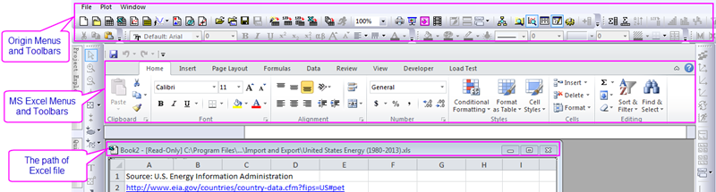
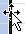

Einfache Operationen beim Arbeiten mit Microsoft Excel
Work-Excel-Basic
Excel-Daten mit Hilfe des Dialogs des Excel-Datenkonnektors importieren
Datenkonnektoren sind ein relativ neuer Mechanismus für den Datenimport. OriginLab empfiehlt das Verwenden des Excel-Konnektors Zum Importieren Ihrer MS-Excel-Daten.
Informationen zum Importieren des Excel-Konnektors finden Sie unter Excel-Daten mit Hilfe des Dialogs des Excel-Datenkonnektors importieren.
Excel-Daten mit Hilfe des Dialogs der X-Funktion impMSExcel importieren
 | Seit Origin 2021b öffnet das Klicken auf die Schaltfläche Excel importieren  den Dialog Excel-Importoptionen des Datenkonnektors. Um zum vorherigen Verhalten zurückzukehren, bei dem diese Schaltfläche den Dialog impExcel geöffnet hat, setzen Sie die LabTalk-Systemvariable @TIB = 2. Eine Anleitung, wie Sie den Wert einer Systemvariablen ändern, finden Sie in dieser FAQ. den Dialog Excel-Importoptionen des Datenkonnektors. Um zum vorherigen Verhalten zurückzukehren, bei dem diese Schaltfläche den Dialog impExcel geöffnet hat, setzen Sie die LabTalk-Systemvariable @TIB = 2. Eine Anleitung, wie Sie den Wert einer Systemvariablen ändern, finden Sie in dieser FAQ.
|
Wenn Sie lieber den älteren X-Funktions-Dialog impExcel verwenden, um Ihre Excel-Daten zu importieren, siehe Excel-Daten mit Hilfe des Dialogs der X-Funktion impMSExcel importieren.
Mit Excel-Mappen innerhalb von Origin arbeiten
| Viele Jahre lang hat Origin eine OLE-Instanz von MS Excel innerhalb des Origin-Arbeitsbereichs unterstützt, auch wenn es den Zugriff auf die Origin-Funktionalität stark eingeschränkt hat. Über die Zeit haben Anwender von einer Zunahme der Probleme berichtet. Für Origin 2021b entschied OriginLab daher, die Elemente der Bedienoberfläche zum direkten Öffnen einer Excel-Datei in Origin (Datei: Excel öffnen) und zum Öffnen einer neuen Excel-Arbeitsmappe in Origin (Datei: Neu: Excel) zu entfernen. Wir empfehlen Ihnen die Verwendung des Excel-Datenkonnektors (oben beschrieben) zum Importieren von Excel-Daten. Der Excel-Konnektor ist schnell und Sie haben vollen Zugriff auf Origins Grafik- und Analysehilfsmittel. Wenn das Verwenden des Excel-Konnektors keine Option ist, können Sie den OLE-Zugriff durch Ändern des Wertes der LabTalk-Systemvariable @MOE wiederherstellen.
@MOE=0; // 0 (default), 1 = show File: Open Excel, 2 = show File: New Excel, 3 = show Open + New
Eine Anleitung, wie Sie den Wert einer Systemvariablen ändern, finden Sie in dieser FAQ.
|
Der restliche Abschnitt geht davon aus, dass Sie den Origin-Menüzugriff auf Excel-Dateien und -fenster wiederhergestellt haben.
Wenn eine OLE-Instanz von Excel innerhalb von Origin geöffnet ist, werden sowohl die Origin- als auch die Excel-Standardsymbolleisten, wie unten abgebildet, angezeigt. Nur Origins Menüs Datei, Zeichnen und Fenster sind verfügbar, wenn ein Excel-Arbeitsmappenfenster aktiv ist. Dies verhindert, dass Daten, die in einer Excel-Arbeitsmappe gespeichert sind, auf Origins arbeitsblattbasierte Datenanalyse und -bearbeitung zugreifen können.

Wenn Sie von dem Excel-Arbeitsmappenfenster zum Origin-Arbeitsmappenfenster wechseln, sehen Sie einen Symbolleistenplatzhalter unter Origins Symbolleisten. Dieser Platzhalter wird verwendet, um den Bereich der Symbolleisten zu stabilisieren, wenn zwischen Excel- und Origin-Unterfenstern gewechselt wird. Sie können ihn ausblenden, indem Sie mit der rechten Maustaste auf den Platzhalter klicken und Symbolleisten-Platzhalter verbergen im Kontextmenü auswählen.
Die Excel-Arbeitsmappe wird als spezieller Typ von Origin-Unterfenster verwaltet. Sie können das Excel-Arbeitsmappenfenster umbenennen, anordnen, speichern oder löschen. Sie können auch mehrere Excel-Arbeitsmappenfenster innerhalb eines Origin-Projekts öffnen. Wie bei der Origin-Arbeitsmappe können Sie Text oder numerische Daten in einem Excel-Arbeitsmappenfenster und die grafische Darstellung der Daten in einem Origin-Diagrammfenster sehen.
Daten in einem Excel-Blatt können dynamisch mit Daten im Origin-Arbeitsblatt verbunden sein. Wenn Sie Daten aus einem in Origin geöffneten Excel-Blatt kopieren, können Sie die Daten als Link in das Origin-Arbeitsblatt einfügen, so dass, wenn sich Daten in der Excel-Datei ändern, in dem Origin-Arbeitsblatt entsprechend aktualisieren.
Der Menübefehl von Excel ist durch einen Klick mit der rechten Maustaste auf die Titelleiste des Excel-Arbeitsmappenfensters verfügbar.
| Speichern |
Speichert die Änderungen ab, die an den Daten in der Arbeitsmappe vorgenommen wurden. Dieser Befehl ist verfügbar, nachdem Sie das Fenster der Arbeitsmappe abgespeichert haben. Beachten Sie, dass dieser Befehl nicht verfügbar ist, wenn die Excel-Arbeitsmappe nur gelesen wird.
|
| Arbeitsmappe speichern unter |
Speichert die aktive Arbeitsmappe in eine Datei, indem ein neuer Name benutzt wird. Öffnet den Dialog Speichern unter.
|
| Origin aktualisieren... |
Wenn Sie ein Excel-Arbeitsblatt umbenennen, das in einem Diagrammfenster dargestellte Daten enthält, aktualisiert dieser Kontextmenübefehl die Verbindung zwischen dem Diagramm und seinem Quellblatt. Nach Auswahl dieses Befehls öffnet Origin den Dialog Verbinden mit Excel-Arbeitsblatt. Bearbeiten Sie diesen Dialog, um die Verbindung zwischen dem Diagramm und dem Blatt wiederherzustellen. Gelegentlich können Arbeitsmappenfenster oder andere Fenster mit Daten aus Arbeitsmappen inaktiv werden. Diese Situation tritt ein, wenn die Anzeige des Fensters mit Daten der Arbeitsmappe leer ist. Um das Fenster zu reaktivieren und die Anzeige wiederherzustellen, wählen Sie diesen Kontextmenübefehl.
|
| Inhalt Hilfe... |
Öffnet die Origin-Hilfe.
|
| Eigenschaften |
Öffnet den Dialog Eigenschaften Arbeitsmappe. Bearbeiten Sie diesen Dialog, um ein Arbeitsmappenfenster umzubenennen und bei der Speicherung Ihres Projekts festzulegen, wie eine Arbeitsmappe gespeichert werden soll. Dieser Dialog listet auch alle Blätter einer Arbeitsmappe auf, die gezeichnete Daten enthalten sowie die zugehörigen Origin-Indexnummern. Indexnummern sind ein Namensbestandteil von Diagrammen, die Daten einer Arbeitsmappe enthalten.
|
Mit Excel-Arbeitsmappen arbeiten
Das Excel-Arbeitsmappenfenster weist aber auch Funktionen auf, die sich von anderen Origin-Unterfenstern unterscheiden. Die folgenden Abschnitte behandeln Vorgänge, die ausschließlich zum Excel-Arbeitsmappenfenster gehören.
| Vor dem Lesen der folgenden Abschnitte stellen Sie sicher, dass Sie die "Warnung" am Beginn der Seite gelesen haben.
|
Excel-Arbeitsmappe öffnen, erstellen und speichern
Von den anderen Unterfenstern unterscheiden sich Excel-Arbeitsmappen darin, dass sie als interne Objekte des Projekts oder als Verknüpfungen zu externen Excel-Dateien gespeichert werden können.
Projektinternes Abspeichern einer Excel-Arbeitsmappe verbessert die Übertragbarkeit des Projekts. Sie können das Projekt dann auf jedem Computer, auf dem Origin und Excel installiert sind, öffnen und haben vollen Zugriff auf Ihre Arbeitsmappendaten. Beachten Sie für interne Excel-Dateien, dass Origin dynamische Verknüpfungen zwischen Formeln in einer Excel-Arbeitsmappe und den in einer anderen Excel-Arbeitsmappe befindlichen Quelldaten nicht unterstützt. Durch das Speichern von Excel-Arbeitsmappen als Verknüpfungen zu externen Dateien können Sie jedoch separate Excel-Dateien pflegen, die aktualisiert werden, sobald Änderungen an den verbundenen Arbeitsmappen in Origin gemacht werden. Die Dateien sind für andere Anwendungen wie Microsoft Excel verfügbar.
Wenn Sie ein Projekt mit Verknüpfungen zu (einer) externen Excel-Datei(en) öffnen, öffnet Origin diese innerhalb des Projekts. Sollte Origin keine Excel-Datei unter dem verknüpften Dateipfad, der im Dialog Eigenschaften Arbeitsmappe angegeben ist, finden können, öffnet Origin den Dialog Dateiname: In diesem Fall können Sie entweder den korrekten externen Dateipfad und den Dateinamen in diesem Dialog eingeben und auf OK klicken oder, wenn die Excel-Datei nicht verfügbar ist, auf Ignorieren (oder Alle ignorieren) klicken. In solchen Fällen öffnet Origin das Projekt und zeigt dann für jede Excel-Arbeitsmappe, deren Quelldatei nicht verfügbar war, einen Platzhalter an. Außerdem werden Datenzeichnungen, die aus der (den) fehlenden Arbeitsmappe(n) erstellt wurden, nicht in dem (den) jeweiligen Diagrammfenster(n) angezeigt.
Nach der Auswahl dieser Option gibt Origin den vollständigen Pfad und Namen der verknüpften Excel-Quelldatei in der Gruppe Dateiname an. Wenn das Arbeitsmappenfenster in Origin erstellt wurde, wird der Standardpfad von dem Excel-Pfad bestimmt, der auf der Registerkarte Verzeichnisse des Dialogs Optionen festgelegt ist.
Excel-Arbeitsmappe in Origin öffnen/erstellen
- Wählen Sie im Menü Datei: Excel öffnen..., um eine Excel-Arbeitsmappe in Origin zu öffnen. Wählen Sie im Menü Datei: Neu: Excel, um eine neue Excel-Arbeitsmappe in Origin zu erstellen.
Excel-Arbeitsmappenfenster zum Standardunterfenster beim Origin-Start machen
- Wählen Sie im Menü Fenster: Optionen, wenn eine Excel-Arbeitsmappe, oder Einstellungen: Optionen, wenn ein Origin-Fenster aktiv ist. Beide Menübefehle öffnen den Dialog Optionen. Wählen Sie die Registerkarte Öffnen/Schließen. Wählen Sie Excel-Arbeitsmappe in der Auswahlliste Projekt starten mit und klicken Sie auf OK. Klicken Sie bei der Nachfrage Als Origin Startup-Optionen speichern? auf Ja, um Einstellungen auf zukünftige Origin-Sitzungen anzuwenden, oder auf Nein, um sie nur auf die aktuelle Origin-Sitzung anzuwenden.
Origin-Projekt mit Links zu externer Excel-Datei speichern
- Klicken Sie mit der rechten Maustaste auf die Titelleiste der Excel-Arbeitsmappe. Wählen Sie im Kontextmenü Einstellungen aus. Der Dialog Eigenschaften Arbeitsmappen wird geöffnet. Hier aktivieren Sie die Option Intern in der Gruppe Speichern. Klicken Sie auf OK, um den Dialog zu schließen. Nach Durchführen des oben stehenden Vorgangs aktualisiert Origin die ursprüngliche Excel-Quelldatei nicht (wenn die aktuelle Excel-Arbeitsmappe aus einer externen Excel-Datei stammt), wenn Sie Datei: Projekt speichern oder Datei: Projekt speichern unter auswählen oder auf die Schaltfläche Projekt speichern auf der Standardsymbolleiste klicken. Außerdem werden neue Änderungen der ursprünglichen Excel-Quelldatei nicht im Origin-Projekt übernommen.
Excel-Datei in einem relativen Pfad zum Origin-Projekt speichern
- Wenn Sie das Origin-Projekt noch nicht gespeichert haben oder das Origin-Projekt in einem vollkommen anderen Ordner als die Excel-Datei gespeichert wurde: Klicken Sie mit der rechten Maustaste auf die Titelleiste der Excel-Mappe und wählen Sie Eigenschaften. Klicken Sie im Dialog auf die Schaltfläche Beim Speichern zum OPJ-Pfad wechseln. Beim nächsten Speichern des Projekts wird eine Kopie der Excel-Datei im gleichen Ordner abgelegt.
- Wenn Sie das Origin-Projekt im gleichen Ordner wie die Excel-Datei oder einem der Excel-Datei übergeordnetem Ordner gespeichert haben, müssen Sie trotzdem das Kontrollkästchen Relativ zum aktuellen Projektpfad (opj) aktivieren. In diesem Fall ist die Schaltfläche Beim Speichern zum OPJ-Pfad wechseln ausgegraut. In diesem Fall wird beim Speichern des Origin-Projekts keine zusätzliche Kopie der Excel-Datei gespeichert.
Verknüpfte Excel-Quelldateien aktualisieren
- Wenn Ihr Origin-Projekt eine Verknüpfung zu einer externen Excel-Datei enthält, aktualisiert Origin automatisch die Excel-Quelldatei, sobald das Projekt gespeichert wird. Wenn Sie entweder Vor dem Speichern oder Vor Projekt speichern unter aus der Auswahlliste Excel-Arbeitsmappen speichern auf der Registerkarte Excel des Dialogs Optionen, ausgewählt haben, wird der Dialog Excel-Arbeitsmappen speichern geöffnet, nachdem eine der Projektspeicheroptionen gewählt wird.
- Um die Excel-Quelldatei zu aktualisieren, muss das zugehörige Kontrollkästchen im Listenfeld Extern ausgewählt werden. Außerdem können Sie die Option wählen, die Daten in der Excel-Arbeitsmappe manuell in der Quelldatei speichern, um die externe Datei jederzeit zu aktualisieren. Klicken Sie mit der rechten Maustaste auf die Titelleiste der Arbeitsmappe und wählen Sie aus dem Kontextmenü Fenster speichern unter im Kontextmenü.
Interne Excel-Arbeitsmappe in externe verwandeln
- Wenn Sie auf die Schaltfläche Neues Excel auf der Standardsymbolleiste klicken, um eine neue Arbeitsmappe in Origin zu öffnen, erstellt Origin standardmäßig eine interne Excel-Arbeitsmappe. Klicken Sie mit der rechten Maustaste auf die Titelleiste und wählen Sie im Kontextmenü Einstellungen, um einen Link in einer externen Datei zu ändern. Dieser Menübefehl öffnet den Dialog Arbeitsmappeneigenschaften. Wählen Sie die Option Extern aus und klicken Sie auf OK.
- Alternativ klicken Sie mit der rechten Maustaste auf die Titelleiste und wählen Sie im Kontextmenü Fenster speichern unter. Dieser Menübefehl öffnet den Dialog Speichern unter. Geben Sie einen Namen in das zugehörige Textfeld ein und bestätigen Sie mit OK.
- Wenn Sie Ihr Projekt danach speichern, wird eine Verknüpfung zu der externen Excel-Arbeitsmappe gespeichert.
Excel-Daten zum Zeichnen verwenden
Es gibt grundlegend zwei Methoden, mit denen Sie in Origin eine Zeichnung mit Hilfe von Excel-Arbeitsmappendaten erstellen können: direktes Erstellen eines neuen Origin-Diagramms und Hinzufügen von Excel-Arbeitsmappendaten zu einem bestehenden Origin-Diagrammfenster.
Der direkte Zeichenprozess wird hauptsächlich über den Dialog Daten um Zeichnen auswählen gesteuert, indem Sie interaktiv Daten aus einer Excel-Arbeitsmappe auswählen, die Zuordnungen zum Zeichnen zuweisen (X, Y, Z etc.) und die Zeichnung erstellen können. Mehrere Datenzeichnungen können in einem einzigen Layer (standardmäßig), mehreren unterschiedlichen Layern oder sogar separaten Diagrammfenstern gezeichnet werden. Origin bietet auch eine Option, um Standardzuordnungen für das Zeichnen zu verwenden, mit denen Sie die zu zeichnenden Daten ohne einen dazwischen liegenden Dialog direkt markieren und einen Diagrammtyp auswählen können.
Die direkteste Methode, Daten zu einem bestehenden Diagrammfenster hinzuzufügen, besteht darin, die Daten zu markieren und per Drag&Drop in das Fenster zu ziehen. Darüber hinaus können die Dialoge Daten zum Zeichnen auswählen, Diagrammeinstellungen oder Layerinhalt verwendet werden, um das gleiche Ziel zu erreichen. Diese Dialoge zeigen Datensatznamen mit Hilfe von Bereichsnotationen, einschließlich Arbeitsmappenname, Arbeitsblattname und Lang- oder Kurzname der Spalte, an. Dies erlaubt die einfache Unterscheidung zwischen Datensätzen, die entweder aus Arbeitsblättern von Origin oder von Excel stammen. Die Benennungsregeln der Datensätze aus Excel-Arbeitsmappen ähneln den Benennungsregeln der Datensätze aus Origin-Arbeitsmappen:
ExcelArbeitmappenName_SpaltenName@BlattNummer
Hierbei ist ExcelArbeitsmappenName der Name der Arbeitsmappe, SpaltenName der Spaltenname und BlattNummer eine numerische Angabe, die die Reihenfolge widerspiegelt, in der Daten aus Arbeitsblättern gezeichnet wurden (lesen Sie den untenstehenden Hinweis).
Um den Wert @Blattnummer für jedes Blatt, das gezeichnete Daten enthält, zu verifizieren, klicken Sie mit der rechten Maustaste auf die Titelleiste des Arbeitsmappenfensters und wählen Sie Einstellungen im Kontextmenü. Die Blätter der Arbeitsmappe und deren zugeordnete Werte der @Blattnummern erscheinen im Listenfeld Blattname - Origin Index.
Hinweis: Der Wert der @Blattnummer ist nicht die Nummer Blattn, die unten auf der Registerkarte der Excel-Arbeitsmappe angezeigt wird. Origin verwendet nicht @1 in Bezug auf das erste gezeichnete Blatt.
Anmerkungen zu gezeichneten Daten einer Excel-Arbeitsmappe befinden sich an denselben Stellen wie Anmerkungen zu gezeichneten Daten aus einer Origin-Arbeitsmappe. Diese Stellen umfassen: die Datenliste unten im Menü Daten und im Dialog Layerinhalt.
Wenn Sie Daten in ein bestehendes Diagrammfenster einfügen, werden die Daten im Stil der Diagrammvorlage angezeigt (z.B. Linie oder Punkt). Haben Sie jedoch eine eigene Vorlage erstellt, sucht Origin nach dem ersten verfügbaren Layout-Platzhalter. Ist kein Layout-Platzhalter verfügbar, zeichnet Origin das Diagramm im Stil der Grafikvorlage.
Sie können in diesem Dialog nun so lange damit fortfahren, dem Diagramm Daten hinzuzufügen, solange Sie noch nicht auf Schließen geklickt haben. Wenn Sie jedoch ein Diagramm bereits mit einer anderen Zeichenmethode erstellt haben oder wenn Sie den Dialog Daten zum Zeichnen auswählen nach dem Erstellen eines Diagramms geschlossen haben, müssen Sie diesen Dialog manuell wieder öffnen, um die gewünschte Zeichenmethode zu aktivieren.
Hinweis: Jeder Diagrammtyp hat spezifische Datenanforderungen (ein Ternärdiagramm enthält z.B. X-, Y-, und Z-Daten). Weitere Informationen dazu finden Sie unter den jeweiligen Diagrammtypen des Kapitels Diagrammtypen.
Zeichnung mit Hilfe von Excel-Arbeitsmappendaten erstellen
- Denken Sie zum Beispiel an das Punktdiagramm. Wählen Sie im Menü Zeichnen: Einfache 2D: Punktdiagramm oder klicken Sie auf die Schaltfläche Punktdiagramm
 auf der Symbolleiste 2D-Grafiken, um den Dialog Daten zum Zeichnen auswählenMappenname zu öffnen. Wählen Sie einen Bereich von Zellen oder eine Spalte in einem Excel-Blatt aus und klicken Sie auf die Schaltfläche X, um X-Daten zuzuweisen. Wählen Sie entsprechend Y-Daten aus und klicken Sie auf die Schaltfläche Zeichnen, um ein Punktdiagramm zu erstellen. 3D-Diagramme können auf die gleiche Weise erstellt werden, brauchen aber eine weitere Zuweisung der Daten zu Z. Wenn die erste Zeile die Spaltentitelzeile ist, können Sie diese Zeile einfach in die Datenauswahl einschließen. Sie wird dann automatisch als Titelzeile zugewiesen und später als Achsentitel gezeigt. Sie können auch eine bestimmte Zeile als Beschriftungszeile festlegen, indem Sie diese Zeile auswählen und auf die Schaltfläche Titelzeile klicken. Datenanforderungen für jeden Diagrammtyp können sich unterscheiden. Einzelheiten finden Sie in dieser Tabelle.
auf der Symbolleiste 2D-Grafiken, um den Dialog Daten zum Zeichnen auswählenMappenname zu öffnen. Wählen Sie einen Bereich von Zellen oder eine Spalte in einem Excel-Blatt aus und klicken Sie auf die Schaltfläche X, um X-Daten zuzuweisen. Wählen Sie entsprechend Y-Daten aus und klicken Sie auf die Schaltfläche Zeichnen, um ein Punktdiagramm zu erstellen. 3D-Diagramme können auf die gleiche Weise erstellt werden, brauchen aber eine weitere Zuweisung der Daten zu Z. Wenn die erste Zeile die Spaltentitelzeile ist, können Sie diese Zeile einfach in die Datenauswahl einschließen. Sie wird dann automatisch als Titelzeile zugewiesen und später als Achsentitel gezeigt. Sie können auch eine bestimmte Zeile als Beschriftungszeile festlegen, indem Sie diese Zeile auswählen und auf die Schaltfläche Titelzeile klicken. Datenanforderungen für jeden Diagrammtyp können sich unterscheiden. Einzelheiten finden Sie in dieser Tabelle.
Excel-Daten per Drag&Drop zeichnen
- Legen Sie zuerst einen Diagrammtyp für Ihre Daten fest: Wählen Sie Fenster: Optionen, wenn eine Arbeitsmappe aktiv ist, oder Einstellungen: Optionen, wenn ein anderes Unterfenster aktiv ist. Mit diesem Menübefehl öffnet sich der Dialog Optionen. Wählen Sie den Typ Drag-and-Drop-Diagramm wie Linie, Punkt oder Linie+Symbol auf der Registerkarte Grafik oder wählen Sie Aktuell, um den Stil der aktiven Diagrammfenstervorlage zu verwenden.
- Zeichnen Sie dann die Daten mit der Drag&Drop-Methode. Wählen Sie die gewünschten Daten in der Arbeitsmappe aus. Bewegen Sie den Mauszeiger auf den rechten Rand des Auswahlbereichs, wenn der Mauscursor folgende Form annimmt: . Halten Sie die linke Maustaste gedrückt und ziehen Sie die markierten Daten in das Diagrammfenster hinein. Lassen Sie die Maustaste los.
- Diese Methode verfügt über keinen Dialog, der als Hilfsmittel für das Zeichnen zwischengeschaltet ist. Daher muss hier von Annahmen bezüglich der Bearbeitung der markierten Daten ausgegangen werden. Ist eine Spalte (oder ein Spaltenbereich) markiert, liefert diese Spalte die Y-Werte für das Diagramm. Die Daten werden gegen die Zeilennummer gezeichnet; wenn mehrere Spalten (oder ein Bereich aus mehreren Spalten) ausgewählt wurden, stellt die äußerste linke Spalte die X-Werte. Alle anderen Spalten liefern Y-Werte. Die Daten werden gegen die X-Werte gezeichnet; wenn mehrere Spalten (oder ein Bereich aus mehreren Spalten) markiert sind und und die STRG-Taste gedrückt wird, während die Daten gezogen werden, werden alle Spalten als Y-Werte behandelt. Die Daten werden gegen die Zeilennummer gezeichnet; wenn das Diagrammfenster mehrere Layer enthält, wird die Datenzeichnung in den aktiven Diagrammlayer gezogen (beachten Sie, dass das Ziehen der Daten in ein Diagramm mit einem Layer dieses Diagramm und diesen Layer aktiviert); wenn Daten auf ein Layersymbol gezogen werden, befinden sich die Datenzeichnungen in diesem Layer.
- Beachten Sie zudem, dass der resultierende Diagrammtyp in der Auswahlliste "Drag and Drop" Diagr. auf der Registerkarte Grafik im Dialog Optionen getroffen wird. Diese Zeichenmethode steht immer dann zur Verfügung, wenn eine Excel-Arbeitsmappe aktiv und ein Diagrammfenster im Projekt geöffnet ist (ausgenommen sind verkleinerte und verborgene Diagrammfenster).
Excel-Daten zu bestehendem Diagramm hinzufügen
- Aktivieren Sie dieses Excel-Arbeitsmappenfenster. Erstellen Sie die neue(n) Diagrammbeziehung(en), indem Sie Daten auswählen und dann auf die Schaltflächen Diagrammzuordnungen im Dialog Daten zum Zeichnen auswählen Mappenname klicken. Dann schaltet die Fensteraktivität auf das Diagrammfenster zurück. Klicken Sie auf die Schaltfläche Diagramm hinzufügen, um die Diagramme dem aktiven Diagrammlayer hinzuzufügen.
- Alternativ können Sie die Dialoge Diagrammeinstellungen oder Layerinhalt verwenden, um Daten zu einem bestehenden Diagrammfenster hinzuzufügen.
Excel-Daten in mehrere Layer zeichnen
- Wählen Sie einen Diagrammtyp im Menü oder klicken Sie in den Symbolleisten auf einen Diagrammtyp, um den Dialog Daten zum Zeichnen auswählen Mappenname aufzurufen. Nachdem Sie Daten für X und mehrere Spaltendaten für Y festgelegt haben, wird die Auswahlliste Zeichnen in aktiv. Wählen Sie Mehrere Layer in der Liste und klicken Sie auf die Schaltfläche Zeichnen, um jede Datenzeichnung in einen eigenen Layer im gleichen Diagrammfenster zu zeichnen. Klicken Sie auf die Schaltfläche Einst. speichern, um die Auswahl in der Auswahlliste Zeichnen in für zukünftige Instanzen dieses Dialogs in der aktuellen Origin-Sitzung zu speichern.
 | Markieren Sie mehrere Y-Spalten, indem Sie auf die gewünschten Spaltenüberschriften klicken und den Mauszeiger darüber bewegen, die Shift-Taste gedrückt halten und auf einen Spaltenbereich klicken oder mit gedrückter STRG-Taste auf nicht zusammenhängende Spalten klicken. Sie können auch einen Bereich von Daten in einer Spalte auswählen, indem Sie auf die gewünschten Zellen klicken und mit dem Mauszeiger ziehen und durch Strg+Klicken zusätzliche Zellen auswählen. |
Excel-Daten ohne festlegende Zuordnungen direkt zeichnen
- Markieren Sie alle zu zeichnenden Daten in der Excel-Arbeitsmappe und wählen Sie einen Diagrammtyp, um den Dialog Daten zum Zeichnen auswählen aufzurufen. Klicken Sie auf die Schaltfläche Standard verwenden und klicken Sie auf Ja im Fenster der Eingabeaufforderung. Die Zeichnung wird mit Hilfe von Origins Standardzuordnungen zum Zeichnen des ausgewählten Diagrammtyps erstellt, anstelle die jedes Mal im Dialog hergestellten Verbindungen zu verwenden. Wenn Sie beispielsweise zwei Arbeitsmappenspalten auswählen, um ein Y-Fehlerbalkendiagramm zu erstellen, verwendet Origin die Nummern des Zeilenindexes als X-Werte, die linke Spalte für die Y-Werte und die rechte Spalte für die Werte des Y-Fehlerbalkens. Origin verwendet die am weitesten links stehende Spalte für die X-Werte, die zweite Spalte für Y-Werte, die dritte Spalte für die Werte des X-Fehlerbalkens und die letzte Spalte für die Werte des Y-Fehlerbalkens.
- Dies ist sehr nützlich beim Erstellen von einigen speziellen Diagrammtypen, z.B. XYWG-Vektor und XYXY-Vektor, bei denen Sie nicht Hilfe des Dialogs Daten zum Zeichnen auswählen zwei Spalten als X festlegen können. Die Einzelheiten zu den Standarddiagrammzuordnungen für jeden Diagrammtyp finden Sie in dieser Tabelle.
- Wenn Sie den Dialog Daten zum Zeichnen auswählen wieder öffnen möchten, deaktivieren Sie das Kontrollkästchen Nach Standardeinstellungen zeichnen auf der Registerkarte Excel des Dialogs Optionen (Fenster: Optionen, wenn eine Excel-Arbeitsmappe, oder Einstellungen: Optionen, wenn ein anderes Unterfenster aktiv ist).
3D-Oberflächendiagramm aus Excel-Daten erstellen
- Sie können einen benachbarten Datenbereich der Excel-Arbeitsmappe auswählen und direkt eine Origin-Matrix erstellen. Um die Matrix zu erstellen, markieren Sie die Arbeitsmappendaten. Wählen Sie Fenster: Matrix erstellen im Menü. Dieser Menübefehl öffnet ein neues Matrixfenster und füllt die Matrix mit den markierten Daten. Auf diese Weise können Sie ein Array von Z-Werten erstellen, das zum Erzeugen eines 3D-Flächendiagramms verwendet werden kann.
Excel-Arbeitsmappe und -Arbeitsblatt benennen
Das Umbenennen der Excel-Arbeitsmappe wird im Dialog Eigenschaften Arbeitsmappe gesteuert, auf das Sie über einen Rechtsklick auf die Titelleiste des Excel-Arbeitsmappenfensters zugreifen. Wählen Sie Einstellungen im Kontextmenü. In diesem Dialog können Sie nicht nur der Arbeitsmappe nicht nur über Kurzname oder Langname einen Namen geben, sondern auch Kommentare hinzufügen. Wenn Sie ein Diagramm aus Ihren Excel-Arbeitsmappendaten erstellen und anschließend das Arbeitsblatt umbenennen, verlieren Sie die Verknüpfung zwischen dem Diagramm und den Daten der Arbeitsmappe.
Wird die Excel-Arbeitsmappe extern gespeichert, wird der gesamte Pfad sowie der Dateiname in der Titelleiste angezeigt.
Excel-Arbeitsmappe in Origin umbenennen
- Klicken Sie mit der rechten Maustaste auf die Titelleiste des Excel-Arbeitsmappenfensters und wählen Sie im Kontextmenü Einstellungen aus. Dieser Menübefehl öffnet den Dialog Arbeitsmappeneigenschaften. Geben Sie einen neuen Namen in das Textfeld der Fenstertitel ein und bestätigen Sie mit OK. Beachten Sie, dass der gesamte Pfad sowie der Dateiname in der Titelleiste angezeigt wird, wenn die Arbeitsmappe außerhalb des Projekts gespeichert wird.
Umbenannte Excel-Arbeitsmappendaten erneut mit Origin-Zeichnung verknüpfen
- Um die Verknüpfung wiederherzustellen, klicken Sie mit der rechten Maustaste auf die Titelleiste des Arbeitsmappenfensters und wählen Sie im Kontextmenü Origin aktualisieren. Dieser Menübefehl öffnet den Dialog Verbinden mit Excel-Arbeitsmappen. Markieren Sie das umbenannte Arbeitsblatt und klicken Sie auf OK.
Excel-Makros und Visual Basic-Anwendungsfunktionen ausführen
Wenn eine Excel-Arbeitsmappe das aktive Unterfenster ist, dann wird die Benutzeroberfläche - mit Ausnahme eines kleinen Teilbereichs der Fenster- und Zeichnungsfunktionen von Origin - von Excel verwendet. Damit sind bei aktiver Arbeitsmappe die Menüs Format, Hilfsmittel und Daten Excel-Menüs. Außerdem bietet Origin über seine standardmäßige Programmiersprache LabTalk Zugriff auf die Daten in einer Excel-Arbeitsmappe.
Excel-Makros in Origin ausführen
- Origin bedient sich einer Excel-Objektmethode, um Excel-Makros aus Origin auszuführen. Damit das Excel-Makro einwandfrei funktioniert, müssen die richtigen Argumente unter Anwendung der Excel-Objektmethode bereitgestellt werden. LabTalk akzeptiert nicht mehr als fünf Argumente. Außerdem muss sich die Arbeitsmappe, die das Excel-Makro enthält, im aktiven Fenster befinden. Um ein Makro auszuführen, geben Sie Folgendes in das Skript-Fenster ein und drücken Sie die EINGABE-Taste:
- excel.run(SheetName.MacroName) or excel.run(ModuleName.MacroName)
- Um einen Bereich für das Ausführen des Makros auszuwählen, führen Sie den folgenden Befehl aus:
- Excel.RunRange(SheetName,RangeName,Arg1,Arg2,&ldots;,Arg5)
- Dabei entspricht Blattname dem Namen des Blatts, das das Makro enthält, Bereichsname der Bezeichnung der Zelle auf dem Blatt, in der das Makro anfängt (z.B. C6), und Argn entspricht den korrekten Argumenten für das Makro (die Anzahl von fünf Argumenten darf nicht überschritten werden). Die Endanweisung nach Ausführung der Excel-Objektmethode entspringt dem Makro selbst.
Visual Basic-Anwendungsfunktionen in Origin aufrufen
- Um die Visual Basic-Anwendungsfunktion auszuführen, geben Sie Folgendes in das Skript-Fenster ein und drücken dann die EINGABE-Taste:
- Excel.Run(FunctionName,Arg1,Arg2,&ldots;,Arg5)
- Dabei FunctionName die Visual Basic-Anwendungsfunktion ist und Argn die korrekten Argumente für die Funktion sind (die Anzahl von fünf Argumenten darf nicht überschritten werden). Der Wiedergabewert nach dem Ausführen der Excel-Objektmethode kommt von der Funktion.
Excel-Daten außerhalb kopieren und in Origin einfügen/Verknüpfung einfügen
Excel-Daten werden aus einer in Excel geöffneten Arbeitsmappe kopiert und dieser Link in Origin eingefügt, um Zugriff auf Origins leistungsstarke Funktionen für grafische Darstellung und Analyse zu erhalten. Und
Wenn Sie Verknüpfung einfügen wählen, erstellen Sie einen DDE-Link zwischen den Excel-Daten und der Origin-Arbeitsmappe. Jede Änderungen diesen Excel-Daten aktualisiert dynamisch die Origin-Arbeitsmappe.
Wenn Sie auf die Arbeitsblattzellen mit DDE-Link klicken, wird der Pfad von Excel auf dem Statusbalken gezeigt. Wenn der eingefügte Inhalt ein Bereich ist (keine einzelne Zelle), dann teilen die Arbeitsblattzellen in diesem Bereich den gleichen Pfad der Links.
Von Excel mit externem relativen Pfad kopieren (empfohlen)
- Öffnen Sie eine externe Excel-Datei in Origin. Speichern Sie die Projektdatei.
- Legen Sie den externen Pfad der Excel-Datei relativ zum Projekt fest.
- Kopieren Sie Daten aus der in Origin geöffneten Excel-Datei und fügen Sie den Link in die Origin-Arbeitsmappe ein.
- Ändern Sie die Daten in der externen Excel-Datei.
- Öffnen Sie die Origin-Projektdatei erneut.
- Die Daten werden in Origin entsprechend aktualisiert.
Von Excel mit absolutem externen Pfad kopieren
- Öffnen Sie eine externe Excel-Datei in Excel.
- Kopieren Sie Daten aus der Excel-Datei und fügen Sie den Link in die Origin-Arbeitsmappe ein.
- Ändern Sie die Daten in Excel.
- Die Daten werden in Origin dynamisch aktualisiert.
- Hinweise: Bitte beachten Sie, dass Daten aus dem absoluten externen Pfad "pfadabhängig" sind. Immer wenn die Excel-Datei in einen anderen Ordner verschoben wird oder das zugehörige OPJ auf einem anderen Computer geöffnet wird, wird ein Dialog angezeigt, der Sie darauf aufmerksam macht, dass der DDE-Link nicht funktioniert.
Zellen mit DDE-Link zu grauem Hintergrund anzeigen
Wählen Sie Bearbeiten: Editiermodus oder drücken Sie Strg + Alt + B, um den Editiermodus zu öffnen. Die Arbeitsblattzellen mit DDE-Link werden mit grauem Hintergrund angezeigt.
Hinweise:- Das Kopieren von Daten/Text aus der externen Excel-Datei in Excel und das darauf folgende direkte Einfügen in Origin (Menü Einfügen oder Strg+V) fügt einen Text anstatt ein Excel-Objekt ein. Wenn Sie eine Excel-Datei einfügen möchten, verwenden Sie bitte Link einfügen.
- Die Systemvariablen, @DDES und DDEL, können verwendet werden, um DDE verwandte Meldungen auszuschalten, die Sie daran erinnern, dass sich der Speicherort der Datei geändert hat.
- Die Systemvariable @DDEN kann verwendet werden, um den Dialog Start DDE Link zu vertiefen. Weitere Einzelheiten finden Sie in dieser FAQ.
- Das Kopieren von "TURE" und "FALSE" aus Excel wird als die numerische n Werte "1" und "0" in Origin eingefügt.
|
FAQs
Siehe auch